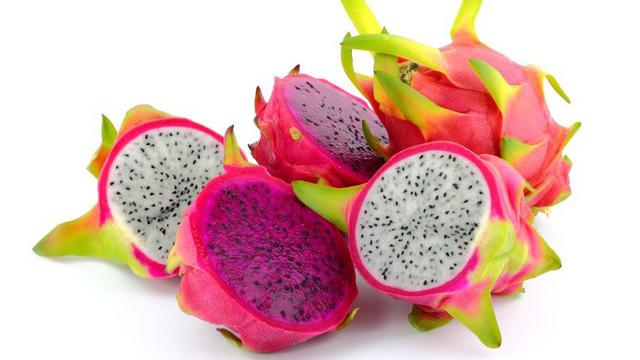
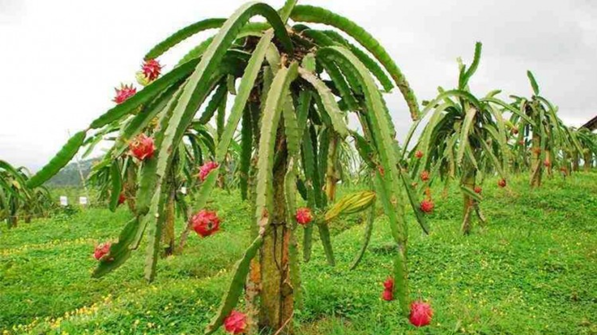
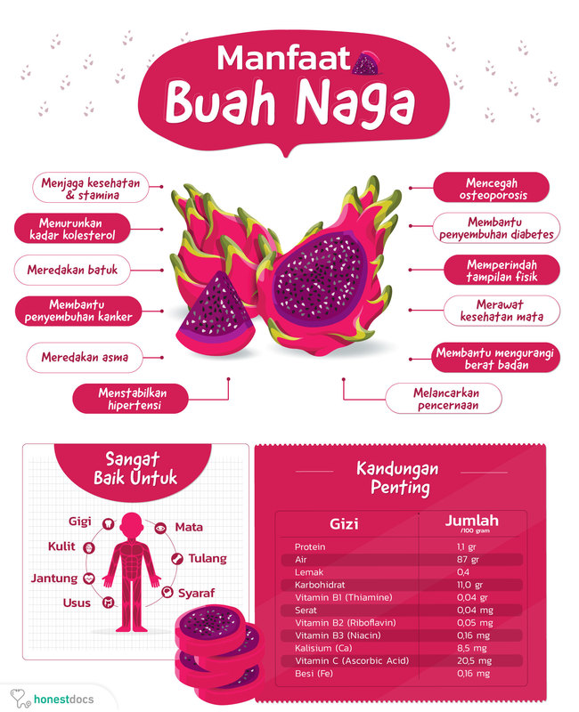

Apa itu buah naga ?
Buah naga (Inggris: Pitaya) adalah buah dari beberapa jenis kaktus dari marga
Hylocereus dan Selenicereus. Buah ini berasal dari Meksiko, Amerika Tengah dan
Amerika Selatan namun sekarang juga dibudidayakan di negara-negara Asia
seperti Taiwan, Vietnam, Filipina, Indonesia dan Malaysia. Buah ini juga
dapat ditemui di Okinawa, Israel, Australia utara dan Tiongkok selatan.
Hylocereus hanya mekar pada malam hari.
Pada tahun 1870 tanaman ini dibawa orang Prancis dari
Guyana ke Vietnam sebagai tanaman hias. Oleh orang Vietnam dan
orang Cina buahnya dianggap membawa berkah. Oleh sebab itu,
buah ini selalu diletakkan di antara dua ekor patung naga berwarna
hijau di atas meja altar. Warna merah buah terlihat mencolok di antara
warna naga-naga yang hijau. Kebiasaan inilah yang membuat buah tersebut
di kalangan orang Vietnam yang sangat terpengaruh budaya Cina dikenal sebagai
Thang Loy (Buah Naga). Istilah Thang Loy kemudian diterjemahkan di Eropa dan
negara lain yang berbahasa Inggris sebagai Dragon Fruit (Buah Naga).
Dari Wikipedia bahasa Indonesia, ensiklopedia bebas wikipedia.com
Morfologi

Morfologi tanaman buah naga terdiri dari akar, batang, duri,
bunga, dan buah. Akar buah naga hanyalah akar serabut yang
berkembang dalam tanah pada batang atas sebagai akar gantung.
Akar tumbuh di sepanjang batang pada bagian punggung sirip di sudut batang.
Pada bagian duri, akan tumbuh bunga yang bentuknya mirip bunga Wijayakusuma.
Bunga yang tidak rontok berkembang menjadi buah. Buah naga bentuknya bulat agak
lonjong seukuran dengan buah alpukat. Kulit buahnya berwarna merah menyala untuk
jenis buah naga putih dan merah, berwarna merah gelap untuk buah naga hitam,
dan berwarna kuning untuk buah naga kuning. Di sekujur kulit dipenuhi dengan
jumbai-jumbai yang dianalogikan dengan sisik naga. Oleh sebab itu, buah ini
disebut buah naga.

Batangnya berbentuk segitiga, durinya sangat pendek dan tidak mencolok,
sehingga sering dianggap "kaktus tak berduri".
Bunganya mekar pada awal senja jika kuncup bunga sudah
berukuran sekitar 30 cm. Mahkota bunga bagian luar yang berwarna krem,
mekar sekitar pukul sembilan malam, lalu disusul mahkota bagian dalam yang
putih bersih, meliputi sejumlah benang sari yang berwarna kuning.
Bunga seperti corong itu akhirnya terbuka penuh pada tengah malam,
karena itu buah naga dikenal sebagai night blooming cereus.
Saat mekar penuh, buah naga menyebar bau yang harum. Aroma ini untuk memikat
kelelawar, agar menyerbuki bunga buah naga.
Dari Wikipedia bahasa Indonesia, ensiklopedia bebas wikipedia.com
Apa saja jenis buah naga ?
Nama buah naga merujuk pada buah-buah yang dapat dimakan dari tumbuhan jenis:
- Hylocereus undatus, yang buahnya berwarna merah dengan daging buah putih.
- polyrhizus, yang buahnya berwarna merah muda dengan daging buah merah.
- Selenicereus megalanthus dengan kulit buah kuning dan daging buah putih.
- costaricensis, buah naga dengan warna buah yang sangat merah.
Apa manfaat buah naga bagi kesehatan ?

Keuntungan mengonsumsi buah naga merah sangatlah beragam. Ada manfaat yang bisa dirasakan langsung oleh tubuh,
bahkan bisa dirasakan hingga jangka panjang.
Setiap bagian buah naga merah memiliki khasiat yang berbeda-beda. Secara keseluruhan,
berikut beragam manfaat kandungan buah naga merah bagi kesehatan, yaitu:
1. Membantu menjaga kesehatan dan stamina tubuh
Salah satu manfaat buah naga merah adalah kandungan antioksidan dan ragam
vitamin yang baik untuk menjaga kesehatan serta stamina tubuh. Antioksidan
sangat penting karena dapat meminimalisir efek radikal
bebas sehingga tubuh lebih tahan terhadap penyakit.
2. Membantu menurunkan kadar kolesterol dalam tubuh
Bagi Anda yang memiliki kolesterol tinggi, cobalah makan buah naga merah. Pasalnya,
kandungan vitamin B3
dalam buah naga merah sangat baik untuk membantu menurunkan kadar
kolesterol dalam tubuh.
Sebab bila dibiarkan terus-menerus, kolesterol tinggi bisa memicu banyak
penyakit serius, di antaranya penyakit jantung koroner dan stroke.
3. Membantu meredakan batuk
Meski mengandung banyak air, makan buah naga merah tidak akan bikin Anda batuk.
Justru, kandungan vitamin B3 di dalamnya diyakini dapat membantu meredakan penyakit batuk.
4. Mendukung penyembuhan penyakit kanker
Buah yang dagingnya berwarna merah keunguan ini mengandung vitamin lengkap nan kompleks.
Para ahli meyakini bahwa khasiat buah naga bisa untuk mendukung proses terapi kanker.
5. Meredakan penyakit asma
Salah satu manfaat buah naga merah adalah sangat baik dikonsumsi oleh penderita asma.
Pasalnya, kandungan vitamin B3 di dalamnya diyakini mampu meredakan gejala asma yang
mengganggu.
6. Menstabilkan tekanan darah tinggi
Lagi-lagi, berkat kandungan vitamin B3 di dalamnya,
manfaat dari buah naga merah sangat baik jika dikonsumsi oleh penderita darah tinggi.
Maka itu, sebelum mencoba minum obat hipertensi, baiknya coba stabilkan
tekanan darah Anda dengan makan buah naga merah yang satu ini dulu.
7. Mencegah osteoporosis
Makan buah naga merah juga dapat membantu mencegah penyakit pengeroposan tulang,
atau biasa disebut dengan osteoporosis. Ini karena di dalam buah berwarna
cerah ini mengandung kalsium organik yang sangat baik untuk tulang.
8. Membantu penyembuhan penyakit diabetes
Walaupun rasanya manis, buah naga merah tidak mengandung glukosa
sehingga aman dikonsumsi oleh penderita diabetes. Sejumlah ahli juga menyebutkan
bahwa manfaat buah naga merah juga dapat membantu meringankan gejala diabetes pada penderita.
9. Memperindah tampilan fisik
Tak hanya jeruk, khasiat buah naga merah juga mengandung vitamin C yang cukup tinggi.
Seperti yang diketahui, asupan vitamin C dapat membantu menjaga kesehatan tubuh,
termasuk kulit.
Sekarang ini, buah naga juga banyak diolah menjadi krim lulur yang bisa
membantu mempercantik kulit.
10. Membantu merawat kesehatan mata
Kalau Anda ingin mata tetap sehat hingga tua, makan buah naga merah bisa menjadi salah satu solusinya.
Pasalnya, buah yang satu ini mengandung beta-karoten yang mampu merawat
kesehatan mata kini hingga nanti.
11. Membantu mengurangi berat badan
Bagi Anda yang sedang diet, cobalah perbanyak makan buah naga merah.
Jenis buah ini mengandung kaya serat dan rendah kalori,
sehingga cocok bagi Anda yang sedang menjalani program
penurunan berat badan.
12. Membantu melancarkan pencernaan
Sama seperti kebanyakan buah pada umumnya, buah naga merah mengandung air
dan serat yang cukup tinggi. Maka jangan heran jika pencernaan Anda jadi lebih
lancar setelah makan buah naga, sebab semua ini berkat kandungan serat di dalamnya.
Dari website kesehatan honestdocs.id
Apa saja kandungan didalam buah naga ?
Manfaat dari buah naga merah tentu tidak terlepas dari kandungan nutrisi di dalamnya.
Ada banyak vitamin dan mineral yang terkandung dalam buah berbentuk unik yang satu ini, yaitu:
| Gizi |
Jumlah / 100 gram |
AKG Harian |
Keterangan |
| Protein |
1,1 gr |
2,1 % |
- |
| Air |
87 gr |
NA |
Kandungan air tinggi |
| Lemak |
0,4 |
- |
Sangat minimal |
| Karbohidrat |
11, 0 gr |
3,4 % |
- |
| Vitamin B1 (Thiamine)
|
0,04 gr |
2,7 % |
- |
| Serat |
0,04 mg |
12 % |
Tinggi serat |
| Vitamin B2 (Riboflavin)
|
0,05 mg |
2,9 % |
- |
| Vitamin B3 (Niacin)
|
0,16 mg |
0,8 % |
- |
| Kalisium (Ca) |
8,5 mg |
0,9 % |
3 kali lebih banyak dari wortel |
| Vitamin C (Ascorbic Acid) |
20, 5 mg |
Na |
Kaya vitamin C |
| Besi (Fe) |
0,16 mg |
0,8 % |
- |
Dari website kesehatan honestdocs.id